임상심리사-1급 (2014-09-20 기출문제)
1과목: 임상심리연구방법론
1. 새로 개발된 불안장애 진단 도구의 공인타당도를 평가하는 방법으로 가장 적합한 것은?
- 불안 장애 전문가들에게 새로 개발한 도구에 대한 설명서를 제공하고 그들의 의견을 묻는다.
- 한 집단을 대상으로 새로운 도구로 진단하고 그 결과를 널리 사용하는 다른 진단도구의 결과와 비교한다.
- 새로운 도구를 사용하여 1년 동안 진단한 사람의 수와 기존에 널리 사용하던 도구를 사용하여 1년 동안 진단 한 사람의 수를 비교한다.
- 한 집단에게 몇 년 동안 새로운 도구를 사용하여 반복적으로 측정한 개개인의 진단이 얼마나 일관성 있는지 측정한다.
(정답률: 알수없음)

2. 다음에서 설명하고 있는 독립변수 선택 방법은?
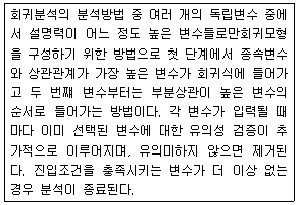
- 입력(enter)
- 단계선택(stepwise)
- 전진(forward)
- 후진(backward)
(정답률: 알수없음)
3. 상호작용을 분석하기 위한 전략으로 가장 적합한 것은?
- 제거전략(dismantling strategy)
- 추가전략(constructive strategy)
- 처치간 성과비교전략(comparative outcome study strategy)
- 래그-연계분석전략(lag-sequential analysis strategy)
(정답률: 50%)
4. 가설에 대한 설명으로 가장 거리가 먼 것은?
- 가설이란 연구문제에 대한 잠정적인 해답으로 볼 수 있다.
- 가설은 독립변수와 종속변수와의 관계로 서술된다.
- 가설은 항상 기존이론으로부터 도출한다.
- 경험적 검증을 위한 작업가설은 명료하여야하고, 가치중립적이어야 한다.
(정답률: 알수없음)
5. 독립변수가 두 개 이상으로서 모든 독립변수가 처치변수일 때 두 처치변수 간의 상호작용을 분석할 수 있는 설계 방법은?
- 무선화구획설계
- 배속설계
- 완전무선화요인설계
- 무선화구획요인설계
(정답률: 알수없음)
6. A와 B에 들어갈 용어를 바르게 짝지은 것은?
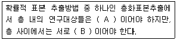
- A - 동질적, B - 이질적
- A - 정적, B - 동적
- A - 이질적, B - 동질적
- A - 동적, B - 정적
(정답률: 알수없음)
7. 표본으로부터 모집단의 특성을 추측하기 위한 통계적 방법은?
- 기술통계
- 실험통계
- 추론통계
- 표본전집법
(정답률: 알수없음)
8. 다음에서 설명하는 분석은?
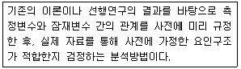
- 확인적 요인분석
- 탐색적 요인분석
- 혼합 요인분석
- 다층 요인분석
(정답률: 알수없음)
9. p(A or B)=p(A)+p(B)라면 A와 B는?
- 연속적이다.
- 상호배타적이다.
- 종속적이다.
- 중첩된다.
(정답률: 알수없음)
10. 과학적 연구의 특징과 가장 거리가 먼 것은?
- 경험적 검증 가능성을 중시한다.
- 보편적 법칙의 발견을 목표로 한다.
- 선행 이론을 토대로 가설을 설정한다.
- 관찰된 현상에 대해 형이상학적인 설명 방법을 이용한다.
(정답률: 알수없음)
11. 3개 이상의 실험집단이 있을 때 여러 번 t검증을 하면 어떤 오류의 가능성이 커지는가?
- 영가설의 오류
- 영가설을 받아들일 위험
- Type Ⅰ오류
- Type Ⅱ오류
(정답률: 알수없음)
12. 추정에 관한 설명으로 가장 거리가 먼 것은?
- 구간추정은 영가설하에서 모수치의 범위를 알려준다.
- 점추정은 영가설하에서 모집단 평균의 범위를 알려준다.
- 점추정과 구간추정 모두 가설검정에 쓰인다.
- Z-통계량에 의해 가설을 검정하는 방법은 점추정에 의한 방법이다.
(정답률: 알수없음)
13. 상관분석을 하기 위해 고려해야 할 사항과 가장 거리가 먼 것은?
- 표본의 크기가 작으면 표본에 따라 상관계수가 변하게 되어 모집단의 상관계수와 멀어질 수 있다.
- X변수의 각 점수에 대응하는 Y점수의 분산과 Y변수의 각 점수에 대응하는 X점수의 분산은 상이해야 한다.
- 상관관계가 있다고 인과관계가 있는 것은 아니다.
- 극단값은 상관계수에 영향을 미친다.
(정답률: 알수없음)
14. 다중회귀분석 시 발생할 수 있는 문제가 아닌 것은?
- 더미변수(dummy variable)
- 다중공선성(multicollinearity)
- 자기상관(autocorrelation)
- 이분산성(heteroscedasticity)
(정답률: 알수없음)
15. 표준편차에 관한 설명과 가장 거리가 먼 것은?
- 변량의 양의 제곱근 값이다.
- 모든 변인값이 동일하면 표준편차는 0 이다.
- 표준편차가 크다는 것은 점수들이 평균으로부터 상대적으로 멀리 떨어져 있따는 것을 의미한다.
- 모집단으로부터 추출한 표본의 평균들이 모집단 평균으로부터 얼마나 떨어져 있는지를 알려준다.
(정답률: 알수없음)
16. 심한 부적편포를 이루고 있을 때 적합한 집중경향치와 변산도 지수를 순서대로 바르게 짝지은 것은?
- 산술평균, 표준편차
- 중앙치, 표준편차
- 산술평균, 사분편차
- 중앙치, 사분편차
(정답률: 알수없음)
17. 피험자 내 설계(within-subject design)의 장점으로 가장 적합한 것은?
- 이중 은폐절차의 사용이 가능하다.
- 연습효과가 있어 정확한 데이터 수집이 가능하다.
- 개인차로 인한 실험의 효과를 통제할 수 있다.
- 이월효과(carry-over effect)를 통제할 수 있다.
(정답률: 알수없음)
18. 측정의 일관성은 있으나 측정하고자 하는 것을 측정하지 않을 때 가장 우려되는 오차는?
- 측정오차
- 표준오차
- 추정오차
- 체계적 오차
(정답률: 알수없음)
19. 다음 분산분석 결과 표에서 ㄱ, ㄴ, ㄷ에 들어갈 숫자는?
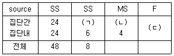
- ㄱ : 3, ㄴ : 8, ㄷ : 2
- ㄱ : 2 , ㄴ : 12, ㄷ : 3
- ㄱ : 2, ㄴ : 8, ㄷ : 2
- ㄱ : 3, ㄴ : 8, ㄷ : 3
(정답률: 80%)
20. 다음 사례의 외적타당도 저해요인으로 가장 적합한 것은?
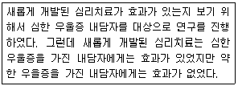
- 중다처치에 의한 간섭효과
- 사전검사와 실험처치 간의 상호작용
- 피험자 선발과 성숙 간의 상호작용
- 피험자 선발과 실험처치 간의 상호작용
(정답률: 알수없음)
2과목: 고급이상심리학
21. 경계선 성격장애의 치료에 관한 설명과 가장 거리가 먼 것은?
- 정신역동치료에서는 내담자의 아동기 경험을 강조하고, 전이가 충분히 발달되도록 허용한다.
- 행동치료에서는 내담자의 행동 레퍼토리의 결함에 주목하여, 보다 좋은 사회기술을 가르치려 한다.
- 인지치료에서는 내담자가 현실검증을 보다 잘 할 수 있도록 잘못된 인지를 찾아내어 변화시키려 한다.
- 변증법적 행동치료에서는 분노와 충동성을 조기에 직접적으로 다루며, 내담자의 책임을 분명히 한다.
(정답률: 알수없음)
22. 일주일 리듬 수면-각성 장애에 관한 설명과 가장 거리가 먼 것은?
- 불규칙한 수면-각성형의 24시간 내 수면 시간의 총합은 동일 연령대의 정상 시간에 해당된다.
- 아침에 늦게 일어나고 밤늦게까지 깨어 있는 올빼미식의 수면-각성 주기를 지닌 사람은 지연된 수면단계형에 해당한다.
- 조기 수면단계형은 남성에게서 많이 나타난다.
- 비24시간 수면-각성형은 맹인에게서 흔히 나타난다.
(정답률: 알수없음)
23. DSM-5에서 분류한 수면이상증(parasomnias)에 해당하는 것은?
- 수면발작증
- 호흡 관련 수면장애
- 악몽장애
- 불면장애
(정답률: 알수없음)
24. DSM-5에서 우울장애에 관한 특성을 모두 고른 것은?
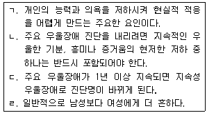
- ㄱ, ㄴ, ㄷ
- ㄴ, ㄷ, ㄹ
- ㄱ, ㄷ, ㄹ
- ㄱ, ㄴ, ㄹ
(정답률: 알수없음)
25. 성격장애 환자들 중 자기파괴성으로 인해 환자들을 도우려 하는 사람들을 가장 불쾌하게 만드는 사람은?
- 반사회성 성격장애자
- 경계성 성격장애자
- 연기성 성격장애자
- 자기애적 성격장애자
(정답률: 알수없음)
26. 일정 기간 동안 특정한 정신장애를 새롭게 지니게 된 사람의 비율을 나타내는 용어는?
- 발병률
- 기간유병률
- 시점유병률
- 기간발병률
(정답률: 알수없음)
27. 신경성 폭식증에 관한 설명과 가장 거리가 먼 것은?
- 반복적인 폭식행동을 한다.
- 체중증가를 억제하기 위해서 반복적이고 부적절한 보상행동을 한다.
- 체중과 체형이 자기평가에 과도한 영향을 미친다.
- 정상체중을 유지하지 못한다.
(정답률: 알수없음)
28. 일반적으로 여성에게서 더 많이 발견되는 것으로 알려진 성격장애를 모두 고른 것은?
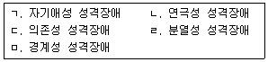
- ㄱ, ㄴ, ㄷ
- ㄱ, ㄴ, ㄹ
- ㄴ, ㄷ, ㅁ
- ㄴ, ㄹ, ㅁ
(정답률: 알수없음)
29. 인지행동치료에 관한 설명과 가장 거리가 먼 것은?
- 개인이 처한 문제상황의 해결에 초점을 두고 최선의 문제해결방법을 치료자와 함께 계획하고 실행한다.
- 다양한 스트레스 상황에 대처하는 여러 인지 행동적 기술을 습득한다.
- 자신이 가지고 있는 부적응적 인지를 적응적 인지로 대체한다.
- 무의식적 갈등이 자신의 삶을 어떻게 지배하고 있는지를 검토하고 더 이상 그 갈등에 의해 지배되지 않도록 실제 생활 속에서 적응적 행동을 실천한다.
(정답률: 알수없음)
30. 신경성 식욕부진증에 관한 설명과 가장 거리가 먼 것은?
- 체중 증가에 대한 공포를 지닌다.
- 실제로 매우 말랐음에도 불구하고 뚱뚱하다고 인식한다.
- 90% 이상이 여성에게 발생하며 청소년기의 여성에게 흔하다.
- 우울증, B군 성격장애를 동반하는 경향이 있다.
(정답률: 알수없음)
31. DSM-4에서 편집증 증상이 덜 심각한 것부터 심각한 것으로 순서가 바르게 나열되어 있는 것은?
- 편집성 성격→편집증→편집성 성격장애→편집형 정신분열증
- 편집성 성격→편집성 성격장애→편집증→편집형 정신분열증
- 편집성 성격→편집성 성격장애→편집성 정신불열증→편집증
- 편집증→편집성 성격→편집성 성격장애→편집형 정신불열증
(정답률: 알수없음)
32. 다음에서 설명하고 있는 것은?
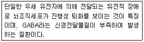
- 픽 질환
- 헌팅턴 질환
- 파킨슨 질환
- 알츠하이머 질환
(정답률: 알수없음)
33. DSM-5에서 다음 설명에 가장 적합한 진단은?
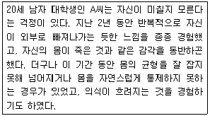
- 해리성 둔주(dissociative fugue)
- 이인증/비현실감 장애(depersonalization disorder)
- 공황장애(panic disorder)
- 해리성 정체감 장애(dissociative identity disorder)
(정답률: 알수없음)
34. 정신장애의 발병에 유전적인 요인과 환경적인 요인이 함께 작용한다고 주장한 이론은?
- 쌍둥이 이론
- 취약성-스트레스 이론
- 매개적 인과이론
- 중다요인 이론
(정답률: 알수없음)
35. 정신불열증의 양성 증상(positive symptom)으로 틀린 것은?
- 와해된 행동
- 환각
- 정서적 둔마
- 망상
(정답률: 알수없음)
36. 다음에서 K씨에게 가장 적합한 진단은?
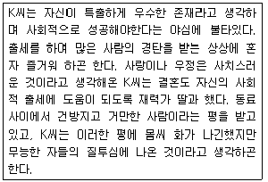
- 연극성 장애
- 자기애성 장애
- 과대망상 장애
- 편집성 장애
(정답률: 알수없음)
37. 아스퍼거 장애에 관한 설명과 가장 거리가 먼 것은?
- 언어발달의 지연
- 발달수준에 맞는 친구관계 발달의 실패
- 사회적 또는 감정적 상호관계의 결여
- 대상의 부분에 지속적인 집착
(정답률: 알수없음)
38. 정신상태검사(mental status examination)에서 평가하는 내용과 가장 거리가 먼 것은?
- 의식의 수준
- 주의지속의 폭
- 장기기억
- 기분
(정답률: 50%)
39. 정신분석이론에서 다음에 해당하는 성격 발달단계는?
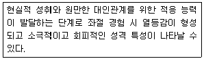
- 항문기
- 구강기
- 성기기
- 잠복기
(정답률: 알수없음)
40. 사회불안장애의 원인과 치료에 관한 설명과 가장 거리가 먼 것은?
- 인지적 입장의 연구자는 사회공포증을 지닌 사람들은 자신이 타인에게 호감을 주지 못한다는 뿌리 깊은 믿음을 지니고 있다고 본다.
- 흔히 사용되는 약물로는 베타억제제를 비롯하여 삼환계항우울제와 MAO 억제제가 있다.
- 주의가 자신에게 향해지는 자기초점적 주의로 불안해하는 자신을 관찰하며 더욱 불안해진다.
- 사회공포증은 인지행동적 접근에 바탕을 둔 개인치료가 가장효과적이다.
(정답률: 알수없음)
3과목: 고급심리검사
41. 청소년 내담자의 우울 정도를 측정하기 위한 도구와 가장 거리가 먼 것은?
- MMPI-A
- PAI-A
- 16PF
- BDI
(정답률: 알수없음)
42. 적성검사에 관한 설명으로 가장 적합한 것은?
- 정서적 성숙도를 측정한다.
- 직업에 대한 흥미를 측정한다.
- 새로운 상황에서의 적응능력을 측정한다.
- 특정 직업군에서의 성공가능성을 예언한다.
(정답률: 알수없음)
43. 심리평가 보고서 작성에 관한 설명과 가장 거리가 먼 것은?
- 보고서 작성 시 검사 자료에 대한 임상가의 해석을 잘 조화시키고 결론에 대해 합리적인 근거를 제시해야 한다.
- 보고서는 내용을 잘못 이용할 소지가 있기 때문에 기본적으로 전문 용어를 중심으로 작성해야 한다.
- 보고서는 의뢰자가 알고 있는 바와 전혀 모르는 바를 연결시키는 중간 구성개념을 도입하는 것이 유용하다.
- 보고서는 문장의 길이를 짧게 하고, 단락을 구분하되 한 문단 내에서는 하나의 개념에 초점을 맞추는 것이 좋다.
(정답률: 알수없음)
44. MMPI 타당도 척도 중 F척도에 관한 설명과 가장 거리가 먼 것은?
- 수검 태도의 지표로 비일상적 반응 경향을 효과적으로 탐지할 수 있다.
- 통계적으로 임상척도 프로파일의 척도치를 교정하는데 사용한다.
- 일반적인 적응 수준을 추론할 수 있다.
- 정신병리 정도를 지적하는 좋은 지침이 될 수 있다.
(정답률: 알수없음)
45. MMPI를 실시하고 채점하는 과정에 관한 설명으로 옳은 것을 모두 고른 것은?
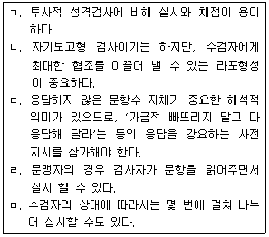
- ㄴ, ㄷ
- ㄱ, ㄷ, ㄹ, ㅁ
- ㄱ, ㄴ, ㄹ, ㅁ
- ㄱ, ㄴ, ㄷ, ㄹ, ㅁ
(정답률: 알수없음)
46. 검사의 신뢰도 및 타당도에 관한 설명과 가장 거리가 먼 것은?
- 반분신뢰도는 문항의 분리 방법에 따라 속도검사에는 적합하지 않을 수 있다.
- 검사-재검사 신뢰도는 시간 경과에 따른 검사 결과의 안정성을 측정한다.
- 내용타당도는 능력검사보다 성격검사나 적성검사에서 더 중요하게 다루어진다.
- 동형검사 신뢰도가 낮은 것은 두 검사가 동일한 특성이나 기술을 측정하고 있지 못함을 의미한다.
(정답률: 알수없음)
47. 종합신경심리평가 결과가 다음과 같을 때, 손상이 가장 뚜렷할 것으로 예측되는 뇌의 영역은?
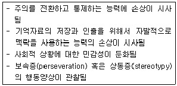
- 측두엽
- 두정엽
- 전두엽
- 후두엽
(정답률: 알수없음)
48. 주의집중력을 측정하는 신경심리검사에 관한 설명으로 옳은 것을 모두 고른 것은?
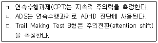
- ㄱ, ㄴ
- ㄱ, ㄷ
- ㄴ, ㄷ
- ㄱ, ㄴ, ㄷ
(정답률: 알수없음)
49. MMPI-2에서 다음과 같은 문제행동을 잘 변별해 낼 수 있는 임상척도는?
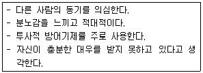
- Pd
- Pa
- Sc
- Ma
(정답률: 64%)
50. 비구조화된 면담에 비해 구조화된 면담의 특징으로 가장 거리가 먼 것은?
- 면담자 변인이 개입되기가 어렵다.
- 다량의 자료를 모으기가 용이하다.
- 실시 절차상 융통성을 발휘하기가 어렵다.
- 선택적인 정보수집이 용이하다.
(정답률: 40%)
51. 다음에서 설명하고 있는 것은?
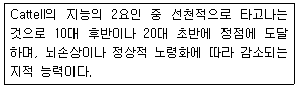
- 결정적 지능
- 전체적 능력
- 특수지능
- 유동적 지능
(정답률: 알수없음)
52. 아동심리검서에서 검사자가 취해야 할 면담태도와 가장 거리가 먼 것은?
- 놀이를 통한 면담을 할 때 검사자보다 아동이 면담을 이끌어 나가도록 해 주는 것이 라포 형성에 도움이 된다.
- 행동이 옳은지에 대한 아동의 판단보다 사실에 입각한 정보수집이 더 중요하다.
- 유아에 관한 정보를 얻을 때는 짧은 면담과 관찰회기를 여러 번 반복하는 것이 필요하다.
- 미래에 대한 생각이나 포부 등에 관해서는 보호자의 보고에 기초해야 한다.
(정답률: 알수없음)
53. Rorschach 검사 실시에 관한 설명과 가장 거리가 먼 것은?
- 좌석의 배치는 검사자가 피검사자와 정면으로 얼굴을 대면하지 않는 것이 좋다.
- 잉크 반점이 무엇처럼 보이는지 정도로 질문하고 세부적인 설명은 하지 않는다.
- 상황에 다라서 도판의 제시 순서를 변경하는 것이 권장된다.
- 피검사자가 편안하게 느껴야 다양한 반응이 표현될 수 있다.
(정답률: 알수없음)
54. 심리검사 점수를 해석할 떄 고려해야 하는 사항과 가장 거리가 먼 것은?
- 개별 문항의 변별도
- 검사점수의 신뢰구간
- 검사점수의 표준오차
- 규준집단의 특성
(정답률: 알수없음)
55. TAT결과를 요구-압력 분석법으로 해석할 때 해석에 관련되는 요인과 가장 거리가 먼 것은?
- 배경의 시대적 특징
- 주인공의 욕구
- 환경으로부터의 압력
- 대상에 대한 주인공의 감정부착
(정답률: 알수없음)
56. 다음은 어떤 검사에 대한 설명인가?
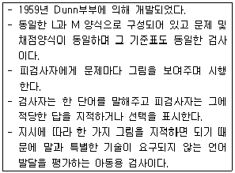
- 피바디 그림 어휘검사(Peabody Picture Vocabulary Test-R : PPVT-R_
- 수용-표현언어 척도(Receptive-Expressive Emergents Language Scale : REEL)
- 초기언어 지표검사(Early Language Milestone Scale : ELMS)
- 언어학습능력 진단검사(Illinois Test of Psycholinguistics Abilities : ITPA)
(정답률: 알수없음)
57. Wechsler 아동지능검사의 소검사와 측정내용을 짝지은 것으로 가장 거리가 먼 것은?
- 불안 - 숫자 외우기, 산수문제
- 추상적 사고 - 공통성 문제, 어휘문제
- 사회적 이해 - 이해문제, 차례맞추기
- 정신운동속도 - 기호쓰기, 모양맞추기
(정답률: 알수없음)
58. 참여관찰법의 특징과 가장 거리가 먼 것은?
- 광범위한 문제행동에 적용될 수 있다.
- 출현빈도가 낮은 행동의 평가에 유용하다.
- 관찰자 선입견의 영향을 배제하기가 용이하다.
- 관찰자와 피관찰자의 상호작용이 관찰에 영향을 줄 수 있다.
(정답률: 30%)
59. 임상심리 검사의 해석과 관련된 윤리적 지침에 관한 설명으로 가장 적합한 것은?
- 임상가는 특정한 해석을 뒷받침할만한 증거가 없는 경우 임상적 경험을 바탕으로 해석한다.
- 임상가는 환자에게 도움이 된다고 판단될 경우 환자에게 검사 결과에 대한 해석 뿐만 아니라 해석 오류의 가능성에 대한 정보도 알려주어야 한다.
- 컴퓨터를 이용한 검사에서는 자극조건이 동일하기 때문에 특별히 검사 환경을 고려할 필요가 없다.
- 장애를 가진 수검자와 일반 수검자의 기능을 비교하는 것이 검사의 주목적일 때 일반규준보다 특수규준을 사용한다.
(정답률: 알수없음)
60. MMPI-2를 수행하던 어떤 수검자가 ‘나는 머리가 자주 아프다’라는 문항을 가리키며 다음과 같이 질문하였다. 이런 질문을 받은 검사자의 응답으로 가장 적합한 것은?
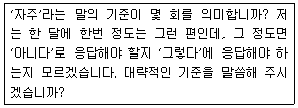
- ‘자주’라는 말은 일반적으로 최근 일주일에 1회 정도를 의미합니다.
- 자신이 생각하는 기준으로 알아서 판단하여 응답해 주십시오.
- 응답하기가 정 애매하면 응답하지 않고 지나가도 됩니다.
- 실제로 한 달에 한번 머리가 아픈 것이므로 ‘예’라고 응답해야 합니다.
(정답률: 알수없음)
4과목: 고급임상심리학
61. 생물학적 관점에서 정신불열증과 관련이 있다고 여겨지는 신경전달물질은?
- 세로토닌(seotonon)
- 도파민(dopamine)
- 노르에피네프린(norepinephrine)
- GABA(gamma amino butyric acid)
(정답률: 알수없음)
62. 지역사회 정신건강운동에서 추구하는 활동과 가장 거리가 먼 것은?
- 정신병원 이외 사회의 여러 영역에서 정신건강 서비스 제공
- 정신질환의 예방을 강조하는 방향으로 정책 변화
- 지역사회에 기반을 둔 사회적응훈련 강조
- 임상심리학자의 개업활동 강화
(정답률: 알수없음)
63. 법정에서 임상심리사가 재판에 출정하여 의뢰받는 내용과 가장 거리가 먼 것은?
- 범죄 당시 피고인의 정신상태에 대한 평가
- 재판상황을 견뎌 낼 수 있는 능력에 대한 자문
- 자신을 변호할 수 있는 능력에 대한 평가
- 피의자의 성격특성을 감안한 양형 기준의 고려사항 평가
(정답률: 알수없음)
64. 일반적으로 임상심리학 분야에서 시행되는 자문의 모델과 가장 거리가 먼 것은?
- 조직모델
- 조직옹호모델
- 과정모델
- 인지모델
(정답률: 알수없음)
65. 라포 형성의 의미와 역할에 대한 설명과 가장 거리가 먼 것은?
- 라포는 치료자 혹은 평가자와 환자 간의 신뢰로운 치료적 관계를 형성하는 것이다.
- 라포는 내담자의 성향이나 의뢰 문제가 다양하기 때문에 객관성 확보를 위하여 보다 엄격하고 표준화된 절차에 의하여 시도해야 한다.
- 라포는 환자가 좀 더 솔직하고 정확한 정보를 제공하는데 도움이 된다.
- 환자의 문제를 다 이해하고 있다는 치료자의 우월적인 태도와 자세는 라포 형성에 큰 장애요인이다.
(정답률: 알수없음)
66. 지능 및 지능평가에 관한 설명과 가장 거리가 먼 것은?
- 편차 IQ란 개인의 수행 점수를 개인의 연령집단과 비교하여 산출한 지능지수로 비율 IQ 상 나이가 증가하는 것에 따라 지능이 낮아지는 것을 보완할 수 있다.
- 인종에 따라서 지능의 집단차가 보이기는 하나 이는 인종 간의 우열로 보기보다는 환경적인 문제로 볼 수도 있다.
- IQ점수와 학업 성취와의 상관계수는 0.30 이하로 학업 성취는 지능 이외에 동기, 교사 기대, 문화적 배경, 부모의 태도 등이 더 영향을 미치는 것으로 알려져 있다.
- 쌍둥이 연구 등에서 나타난 지능의 유전적 영향과 환경적 영향의 문제를 고려할 때 유전적 영향도 상당한 것으로 인정되며 그 설명변량은 약 50% 정도에 이른다는 결과도 있다.
(정답률: 알수없음)
67. 행동평가에서 임상적 판단과 해석을 향상시키는데 가장 적합한 방법은?
- 행동평가 시 많은 양의 정보들을 얻게 되므로 적절한 분류와 단순화가 핵심적인 방안이다.
- 행동평가는 결국 표본 행동의 획득 및 제한적 정보 수집을 기초로 하기 떄문에 핵심 정보들을 중심으로 집중적 의미를 부여하는 방안이 요구된다.
- 행동평가의 타당성을 확보하기 위하여 충분한 기록을 확보하여야 하며, 가능한대로 충분한 추후조사를 실시하여 기록에 대한 검증과 확인을 거치는 것이 필요하다.
- 행동평가에서 모든 상황과 환경적 요인을 알 수는 없으므로 보다 과도한 추정을 통하여 이를 보완하는 것이 요구된다.
(정답률: 알수없음)
68. 형사법 체계에서 정상적인 법 절차를 집행하기 어려운 사유로 그 성질이 다른 하나는?
- 해리성 성격장애환자가 다른 성격 상태에서 범행한 사실을 기억할 수 없는 경우
- 정신지체 청소년이 낮은 지능으로 인하여 자신의 범행사실에 대해 정상적인 판단이 어려운 경우
- 장기간의 법적 소송문제로 더 이상 재판을 받기가 어려울 정도의 정신적 혼란을 보이는 경우
- 급성기 정신병 상태에서 범행을 저질러 분명한 범행동기를 밝히기 어려운 경우
(정답률: 34%)
69. 심리치료의 초기발전에 기여한 인물과 활동에 대한 설명으로 가장 거리가 먼 것은?
- Freud : 정신분석은 의학의 전문분야가 아님을 주장했다.
- Dollard 와 Miller : 정신분석 개념과 행동주의 이론의 통합을 모색했다.
- Rogers : 심리치료 과정과 결과에 대한 체계적이고 경적인 연구를 개발했다.
- Lazarus : 치료의 대부분은 엄밀한 행동주의적 요소로 설명될 수 있음을 주장했다.
(정답률: 알수없음)
70. 현상학적 이론에 대한 설명과 가장 거리가 먼 것은?
- 왜곡, 부인과 같은 방어기제의 개념을 인정하지 않는다.
- 공감, 무조건적인 긍정적 존중, 진솔성과 같은 치료자의 태도를 치료기법보다 더 중요한 것으로 본다.
- 모든 사람은 긍정적 존중에 대한 욕구를 가지고 있다.
- 객관적 진실 이상으로 개인이 주관적으로 느끼는 생각 감정도 중요하다.
(정답률: 알수없음)
71. 대상관계이론의 관점과 가장 거리가 먼 것은?
- 자아는 출생에서부터 존재한다.
- 리비도는 원초아(이드)의 기능이다.
- 자아는 근본적으로 대상 추구적이다.
- 공격성은 박탈 및 좌절의 결과다.
(정답률: 알수없음)
72. 치료효과에 관한 연구를 수행함에 있어 고려해야 하는 사항과 가장 거리가 먼 것은?
- 연구 참여자인 환자의 참여 동기와 연구에 대한 이해여부가 중요한 변인이다.
- 실제로 환자 변인 모두를 통제하기는 어렵기 대문에 이에 대한 제한점을 분명히 인지하고 있어야 한다.
- 치료 성과의 측정은 사전에 정의되어 환자 집단과 통제 집단 모두에게 동등하게 적용되는 것이 적절하다.
- 임상사례에 관한 깊이 있는 관찰과 평가는 증상에 대한 세부 정보나 다양한 가설을 획득하기 위해 탄력적으로 시행되어야 한다.
(정답률: 알수없음)
73. 신경심리학에 관한 설명과 가장 거리가 먼 것은?
- 신경심리학이란 두뇌 기능과 행동 간 관련성에 대한 연구이다.
- 두뇌 손상을 일으키는 원인으로는 외상, 독성물질, 퇴행성 질환과 성격장애가 있다.
- 현태 임상신경심리학자는 검사 배터리를 융통성 잇게 채택하여 평가한다.
- 신경심리학자들은 진단, 회복의 예후, 개입과 재활에 주요 역할을 감당한다.
(정답률: 50%)
74. 두통치료를 돕기 위해 활용되는 행동의학적 기법은?
- 이완훈련과 바이오피드백
- 심리도식치료
- 체계적 둔감법
- 역설적 의도법
(정답률: 60%)
75. 성격평가도구에 관한 설명과 가장 거리가 먼 것은?
- MMPI : 경험적 준거 방식으로 구성된 검사로서 정신장애나 일반적 성격특성에 이르는 다양한 심리적 특성에 대한 예언적 목적으로 사용되어 왔다.
- TAT : 일련의 그림에 대한 반응에서 상상력의 산물을 해석함으로써 내적 갈등, 태도, 목표 등을 평가하는 것으로 상황적 요인이나 문화적 요인의 영향이 적은 도구이다.
- Rorschach test : 대표적인 투사법 검사로서 잉크반점에 대한 반응을 기초로 하여 해석하는 접근으로 신뢰도와 타당도가 의문시되는 면이 있다.
- NEO-PI-R : Goldberg의 5요인 모델에 기초하여 구성된 성격검사로서 합리적-경험적 검사구성 전략에 따라 개발 되었다.
(정답률: 알수없음)
76. 심리치료를 종결해야 할 상황과 가장 거리가 먼 것은?
- 치료과정에서 역전이가 나타날 경우
- 환자가 다른 지역으로 이사하여 지속적인 치료를 받기 어려운 경우
- 치료자가 충분한 지식이나 경험, 기술이 부족하여 더 이상 치료적 관계를 지속할 수 없다고 판단한 경우
- 치료자와 내담자가 최선의 노력을 했지만 더 이상 진전이 없는 고원상태가 지속될 경우
(정답률: 알수없음)
77. 정신분석에 관한 설명과 가장 거리가 먼 것은?
- 정신분석은 엄격한 자연과학적 검증을 통해서 수립된 심리치료 이론이다.
- 자아는 수용할 수 없는 갈등을 담고 있는 충동들이 의식으로 뚫고 들어오려는 위협으로부터 마음을 보호하는 기능을 한다.
- 전이가 잘 형성되지 않는 사람은 정신분석에 적합하지 않다.
- 환자는 전이분석을 통해서 아동기의 무의식적, 환상적 소망이 현재 삶에 끼치는 부정적 영향을 깨닫게 된다.
(정답률: 알수없음)
78. 현대임상심리학의 변화 양상에 관한 설명으로 가장 적합한 것은?
- 정신역동적 접근을 우선시 하며 고수하는 경향이 지속되고 있다.
- 심리치료 연구는 보편적으로 적용 가능한 개입방안 개발을 목표로 하고 있다.
- 행동의학은 상세화할 수 있는 준거 및 효과적인 행동적 개입 방안으로 성장세를 유지하고 있다.
- 심리진단 분야는 임상심리학의 중요한 정체성이며 점점 더 업무비율이 상승하는 추세이다.
(정답률: 40%)
79. 면접 때 사용하는 질문 유형에 관한 설명으로 가장 적합한 것은?
- “이전에 당신은 이렇게 말했는데..”는 촉진형 질문에 해당한다.
- 폐쇄형 질문은 환자의 대화를 독려한다.
- 직면형 질문은 환자의 대답이 이전 내용과 불일치하거나 반문할 때 사용한다.
- 명료형 질문은 환자와 라포를 형성하는데 도움이 된다.
(정답률: 알수없음)
80. 행동치료에서 효과적인 행동계약을 맺기 위한 지침과 가장 거리가 먼 것은?
- 계약된 보상은 정해진 행동이 나타난 즉시 주어져야 한다.
- 계약내용이 명확해야 한다.
- 행동계약을 맺을 때 보상기회를 매번 가질 수 있도록 한다.
- 내담자가 한 계약은 정해진 시간 내에 충분히 실행 가능한 것이어야 한다.
(정답률: 알수없음)
5과목: 고급심리치료
81. 현실치료의 인간관에 관한 설명과 가장 거리가 먼 것은?
- 현실치료의 선택이론에 따르면, 인간은 외부의 어떤 힘에 의해 동기화되는 공백 상태로 태어난다.
- 인간은 다섯 가지 유전적 욕구(생존, 사랑과 소속, 힘, 자유, 재미)를 가지고 있다.
- 인간은 태어나서 죽을 떄까지 행동하며, 행동은 내적동기와 선택의 결과라는 사실을 강조한다.
- 자신의 행동이 선택에 의한 것이라면, 당사자는 그 결과에 대해 책임을 져야 한다.
(정답률: 알수없음)
82. 학습 상담의 단계와 그 단계에서 다루어야 할 내용이 잘못 짝지어진 것은?
- 초기 단계 : 지능검사, 학습방법검사, 학습태도검사, 기초학력검사 등을 실시하였다.
- 중기 단계 : 학습 부진의 원인이 되는 자기패배적 악순환을 자각하도록 하였다.
- 중기 단계 : 복습과 예습 계획 및 수업 전략을 수립하였다.
- 종결 단계 : 내담자에게 스스로 학습할 수 있는 능력에 대한 자신감을 심어주었다.
(정답률: 알수없음)
83. Jung의 분석심리학에서 중년기 이후 인격의 발전상태를 의미하는 개념으로서 자기를 향해서 성숙해 나가는 것은?
- 개성화
- 그림자
- 원형
- 페르소나
(정답률: 알수없음)
84. 심리치료 효과에 관한 연구들에서 심리치료 효과에 가장 큰 영향을 주는 것으로 소개하는 요소는?
- 환자- 치료자 치료동맹
- 온화하고 자신에 찬 치료자
- 신념, 희망, 기대와 같은 비특정적 요소들
- 감정의 분출 및 카타르시스
(정답률: 알수없음)
85. 중독문제를 가지고 있는 환자를 돕기 위한 부부치료에서 환자 배우자의 핵심적 주제와 가장 거리가 먼 것은?
- 신뢰
- 공정성
- 중독문제에 대한 낙천적 태도
- 자기존중감
(정답률: 46%)
86. 노인심리치료에 사용되는 회고요법에 관한 설명과 가장 거리가 먼 것은?
- 회고요법은 보통 기억, 평가, 종합의 과정을 거친다.
- 과거에 대한 회고 작업에서는 과거의 상처 경험보다는 주로 긍정적 측면을 다루는 데 초점을 맞춘다.
- 노인 뿐 아니라 사형수, 젊은 환자들에게도 가능하다.
- 죽음에 임박했다는 생물학적, 심리적 직면에 의해 촉진된다.
(정답률: 알수없음)
87. 주의집중방식의 사회기술훈련에 관한 설명과 가장 거리가 먼 것은?
- 사회기술훈련을 원만히 수행하기 위해 적어도 30~90분 정도의 주의집중 능력을 유지하는 것을 목표로 한다.
- Liberman의 UCLA 임상연구소에서 개발된 절차로 중증환자의 주의력 향상에 적용된다.
- 서로 다른 다양한 훈련장면을 연습시키는 방안이다.
- 역할연기, 모델링 및 학습원리에 따른다.
(정답률: 알수없음)
88. 중독에 관한 SBCM 모형(social-behavioral-cognitive moral model)에 관한 설명과 가장 거리가 먼 것은?
- 심리적 모형이면서도 중독의 실체를 인정한다.
- 대상에 대한 강력한 애착은 정서, 인지적 차원에서 이루어진다.
- 유전적, 생물학적 소질을 고려한다.
- 과도한 중독에는 양가감정이 존재하지 않는다는 관점을 취한다.
(정답률: 알수없음)
89. 성폭력 피해의 가능성이 있는 내담자를 대상으로 상담을 진행할 때 상담자가 유의해야 할 사항과 가장 거리가 먼 것은?
- 상담자가 성폭력 피해문제를 먼저 질문하기보다는 일반적인 질문을 통해 내담자 스스로 말할 기회를 준다.
- 상담과 관련해서 모든 내용에 대한 비밀 보장을 약속한다.
- 다른 관련 기관에 의뢰하게 될 때 왜 이런 조치를 하는지에 대해 내담자를 이해시킨다.
- 내담자가 사실을 이야기하지 않는다고 의심하지 말고, 내담자는 자기 보조에 맞춰 최선을 다하고 있음을 받아 들인다.
(정답률: 알수없음)
90. 행동치료의 기본적 특성과 가장 거리가 먼 것은?
- 시행방법이 간단하지 않고 복합적이다.
- 쉬운 것에서 어려운 것으로 진행된다.
- 전체 치료 소요시간이 짧다.
- 자기 통제적 접근을 사용한다.
(정답률: 알수없음)
91. 내담자 문제를 평가하는 과정에 관한 설명으로 가장 적합한 것은?
- 객관적인 평가를 위해 평가의 본질과 목적은 말하지 않는다.
- 내담자의 문제를 명확히 파악하기 위해 심리평가가 권장된다.
- 선입견을 배제하기 위해 평가 절차에 대한 설명은 생략한다.
- 내담자 문제의 평가는 반드시 상담자가 직접 한다.
(정답률: 알수없음)
92. 내담자 중심 치료 방법에 관한 설명과 가장 거리가 먼 것은?
- 정신과적 진단을 피하거나 강조하지 않지만 평가는 중요시 여긴다.
- 충고하기, 확인과 설득, 해석하기, 비판하기 등을 피한다.
- 내담자의 자기 결심과 자아 실현 등 긍정적인 측면에 초점을 둔다.
- 실존치료, 로고치료, 게슈탈트 치료 등이 여기에 속한다.
(정답률: 알수없음)
93. 정신사회재활모형에 관한 설명으로 가장 적합한 것은?
- 장애(disability)의 예 : 취업을 하지 못하고 거주지가 없는 것
- 손상(impairment)의 예 : 사회기술의 부족
- 손상(impairment)에 대한 개입 : 병리의 감소 및 제거에 초점을 둔 치료
- 장애(disability)에 대한 개입 : 제도 변화에 초점을 둔 사회적 재활
(정답률: 알수없음)
94. 구조적 가족치료에 대한 설명과 가장 거리가 먼 것은?
- 가족의 역기능적인 구조를 개선하는 것이 치료 목적이다.
- 가족 내의 삼각관계를 없애는데 초점을 둔다.
- 가족 간의 경계를 명확하게 하는데 초점을 둔다.
- 치료자와의 경험을 통해 가족 구성원 개인의 성장에 초점을 둔다.
(정답률: 알수없음)
95. 다음 사례에서 A씨의 인지적 오류는?
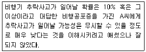
- 흑백논리적 사고
- 개인화
- 임의적 추론
- 자기 비하
(정답률: 40%)
96. 상담 수퍼비전에 관한 설명과 가장 거리가 먼 것은?
- 수퍼비전 계약 시 시간요소, 교육구조, 수퍼비전 구조, 평가 방법 등 세부적인 내용을 명시한다.
- 신뢰로운 관계형성과 상호 책임감을 갖도록 수퍼비전 계약을 명문화 한다.
- 전이 형성을 위해 수퍼바이저의 학위와 경력은 가급적 노출하지 않는다.
- 객관성 확보를 위해 수련평가도구를 사전에 수련생들에게 고지한다.
(정답률: 알수없음)
97. 상담계획 수립과정에서 치료자가 유의할 사항에 관한 설명으로 가장 적합한 것은?
- 내담자가 초기에 보이는 불만은 차차 해소되기 때문에 내담자의 불만보다는 긍정적 반응에 초점을 유지한다.
- 내담자의 의사전달방식은 언어적 작업인 심리치료에서는 부차적으로 취급되어야 한다.
- 치료는 내담자가 호소하는 문제들을 위주로 진행되어야 한다.
- 내담자의 문제 정의 및 해결방안은 치료의 진행과정에서 작업가설의 형태로 검증되어야 한다.
(정답률: 알수없음)
98. 심리치료에서 내담자의 비언어적 단서에 해당하지 않는 것은?
- 시선
- 질문의 일부에 대해서 침묵으로 반응하는 것
- 얼굴 표정
- 전반적 외양
(정답률: 50%)
99. 자살상담에 관한 설명과 가장 거리가 먼 것은?
- 어떤 경우에도 내담자를 존중하는 지지적인 자세를 취한다.
- 상담자가 주도적으로 상담을 진행하는 것이 중요하다.
- 자살에 관한 구체적 내용은 안 묻는 것이 좋다.
- 자살은 우울증 이외에 경계선 성격장애에서도 많이 발생한다.
(정답률: 알수없음)
100. 효과적인 해석에 관한 설명과 가장 거리가 먼 것은?
- 치료자가 해석을 성급하게 하면 내담자가 방어적 태도를 취한다.
- 치료자가 제시한 해석이 내담자의 해석보다 더 중요하다.
- 치료자가 질문을 제기하고 내담자가 스스로 해석하게 만드는 것이 가장 좋다.
- 내담자가 이해할 수 있는 일상언어를 사용할 떄 더 잘 받아들여진다.
(정답률: 알수없음)